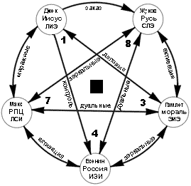

4.3. Вечный вопрос «Что делать?» – историко-соционический анализ
|
«Не знаю» звучит по-разному в устах умного и дурака. Л. Кумор |
Рассмотрим работу пары функций, наиболее важных с нашей точки зрения для данной темы, в рассматриваемой схеме.
Первая – деловая логика.
Жуков, имея ЧЛ в демонстрационной, занимается своим делом. Тем не менее ему очень сложно (бессознательная функция) вербализовать – а что, собственно говоря, это за дело? Ради чего все? Хотелось бы как-то всех построить – чтобы дело делали, а не смуты организовывали... Да и с другими государствами надо отношения организовывать, причем отнюдь не с позиции слабейшего, как понимаете.
Одновременно идет широкомасштабная экспансия, которая требует постоянного напряжения, – хочется отдохнуть. Хотя и подсознательно, но – хочется... Возникает, сначала незначительная, маска дуала – Есенина. Но у того ЧЛ находится в болевой.
И тут принимается на вооружение (по политическим причинам) целый комплекс с ЧЛ в базе, ограничительной и ролевой соответственно. Получается идиллия: сразу понятно, зачем все делается (заимствуется от Иисуса), в максовской структуре можно всех построить и заставить работать; в случае же разногласий стоит лишь командным голосом рявкнуть приказание (7-я функция в церковном аппарате), ну и привнесенная мораль вполне поддерживает то, что вроде бы надо делать (ролевая). Да и идея-то какая хорошая (социальный заказ)! Ну заодно и народ под присмотром (контроль)...
Вот и получилось, что от построения Империи (цель, заложенная в эго-блоке Жукова) Русь скатилась до роли «народа-богоносца», живущего в духовных мечтаниях и не решающегося что-то делать. Жуков еще не истреблен полностью, но внушенные Иисусом ценности совершенно иные; Есенину же на тему «что делать?» даже думать неприятно.
Тем не менее показательно, что до сих пор русский народ лелеет мечту о «жестком, но справедливом» управителе, который придет и наведет на Руси порядок – т.е. мечтает о руководителе-СЛЭ. И в самом деле, уже упоминавшийся выше Петр I, получив в управление страну, находящуюся в состоянии полного бардака, справился с ситуацией, начав выстраивать Империю (не будем затрагивать здесь вопрос справедливости – тем более, что дефиниция этого термина весьма зависит от времени и места). Петр I пользуется уважением в народе до сих пор, несмотря на то, что этот самый народ он истреблял, можно сказать, оптом.
В современной литературы: популярен образ «народного мстителя», не
гнушающегося применением физической силы и т.п. На еще более попсовом уровне –
происходит клонирование образа «криминального элемента», в быту «белого и
пушистого», но жесткого и беспощадного, когда это ему надо, причем проявляется
это массово, по всем фронтам: «бандитские романы», фильмы типа «Брат», радио «Шансон»...